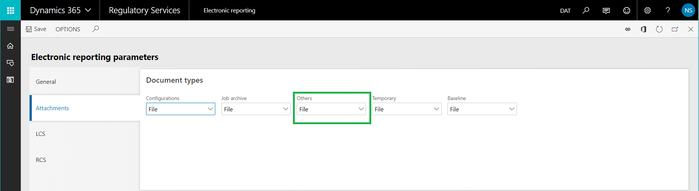
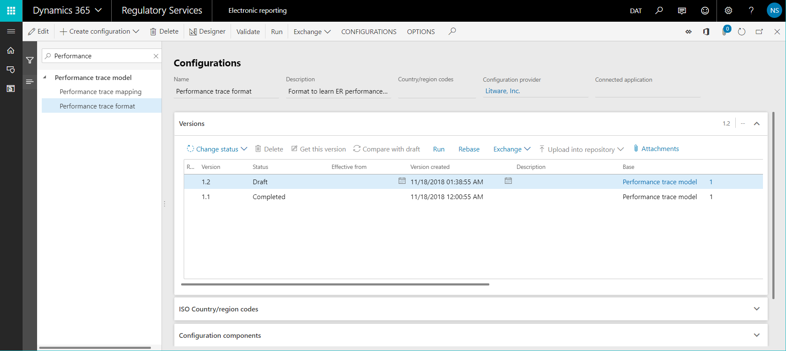
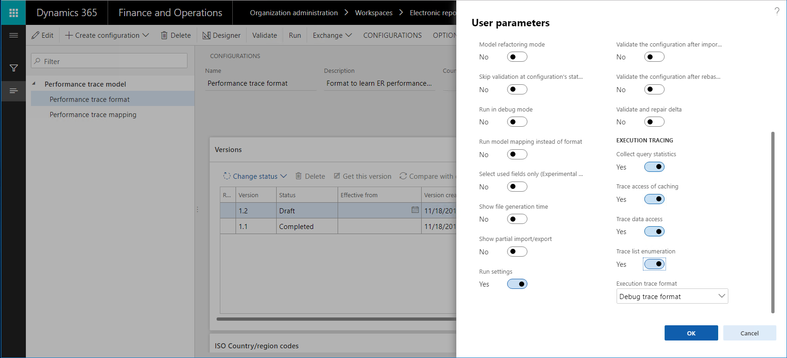
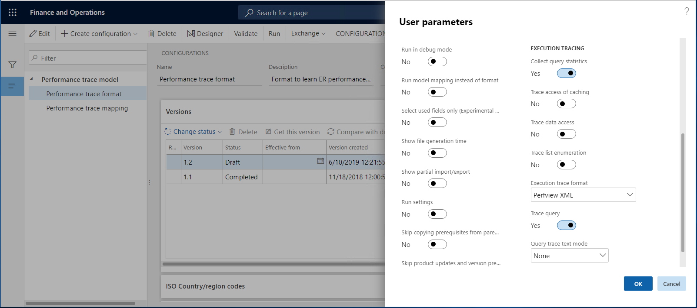

Ausführung von EB-Formaten nachverfolgen, um Leistungsprobleme zu behandeln
[!include[banner](../includes/banner.md)]Im Rahmen des Prozesses, Elektronische Berichterstellungs-(EB)-Konfigurationen zu entwerfen, um elektronische Dokumente zu generieren, definieren Sie die Methode, mit der Daten aus der Anwendung abgerufen werden und in der Ausgabe, die generiert wird, eingegeben werden. Die EB-Leistungsablaufverfolgungfunktion hilft dabei, die Zeit und Kosten zu verringern, die durch das Sammeln der Details der EB-Formatausführung und bei deren Verwendung zur Behandlung von Leistungsproblemen. Dieses Tutorial bietet Richtlinien dazu, wie Leistungsnachverfolgungen für ausgeführte EB-Formate gewonnen werden und wie die Informationen aus diesen Nachverfolgungen zur Verbesserung der Leistung verwendet werden.
Voraussetzungen
Um die Beispiele in diesem Tutorial abzuschließen, müssen Sie den folgenden Zugriff haben:
Zugriff auf eine der folgenden Rollen:
- Entwickler für elektronische Berichterstellung
- Funktionaler Berater für elektronische Berichterstellung
- Systemadministrator
Zugriff auf die Instanz des Regulatory Configuration Service (RCS), der für denselben Mandanten wie die Anwendung bereitgestellt wurde, für eine der folgenden Rollen:
- Entwickler für elektronische Berichterstellung
- Funktionaler Berater für elektronische Berichterstellung
- Systemadministrator
Sie müssen auch die folgenden Dateien herunterladen und lokal speichern.
| Datei | Inhalt |
|---|---|
| Leistungsnachverfolgung model.version.1 | Beispiel-EB-Datenmodell-Konfiguration |
| Leistungsnachverfolgung metadata.version.1 | Beispiel-EB-Metadatenkonfiguration |
| Leistungsnachverfolgung mapping.version.1.1 | Beispiel-EB-Modellzuordnungskonfiguration |
| Leistungsnachverfolgung format.version.1.1 | Beispiel-EB-Formatkonfiguration |
Parameter der elektronischen Berichterstellung konfigurieren
Jede EB-Leistungsablaufverfolgung, die in der Anwendung generiert wird, wird als Anhang des Ausführungsprotokoll-Datensatzes gespeichert. Das Dokumentenverwaltungs-(DM)-Framework wird verwendet, um diese Anhänge zu verwalten. Sie müssen EB-Parameter im Voraus konfigurieren, um den DM-Dokumenttyp anzugeben, der verwendet werden soll, um Leistungsnachverfolgungen anzufügen. Klicken Sie im Arbeitsbereich Elektronische Berichterstellung auf den Link Parameter der elektronischen Berichterstellung. Wählen Sie anschließend auf der Seite Elektronische Berichterstellungsparameter unter der Registerkarte Anhänge im Feld Andere den DM-Dokumenttyp aus, der für Leistungsnachverfolgungen zu verwenden ist.
Um im Suchfeld Andere verfügbar zu sein, muss ein DM-Dokumenttyp in folgender Weise auf der Seite Dokumenttypen konfiguriert sein (Organisationsverwaltung > Dokumentenverwaltung > Dokumenttypen):
- Klasse: Datei anfügen
- Gruppe: Datei

Note
Der ausgewählte Dokumenttyp muss in jedem Unternehmen der aktuellen Instanz verfügbar sein, da DM-Anhänge unternehmensspezifisch sind.
RCS-Parameter konfigurieren
EB-Leistungsnachverfolgungen, die generiert werden, werden in RCS zur Analyse importiert, indem der EB-Format-Designer und der EB-Zuordnungs-Designer verwendet wird. Da EB-Leistungsnachverfolgungen als Anlagen des Ausführungsprotokoll-Datensatzes gespeichert werden, der dem EB-Format zugeordnet ist, müssen Sie RCS-Parameter im Voraus konfigurieren, um den DM-Dokumenttyp anzugeben, der verwendet werden soll, um Leistungsablaufverfolgungen anzufügen. In der Instanz von RCS, der für Ihr Unternehmen im Arbeitsbereich Elektronische Berichterstellung bereitgestellt wurde, wählen Sie Elektronische Berichterstellungsparameter aus. Wählen Sie anschließend auf der Seite Elektronische Berichterstellungsparameter unter der Registerkarte Anhänge im Feld Andere den DM-Dokumenttyp aus, der für Leistungsnachverfolgungen zu verwenden ist.

Um im Suchfeld Andere verfügbar zu sein, muss ein DM-Dokumenttyp in folgender Weise auf der Seite Dokumenttypen konfiguriert sein (Organisationsverwaltung > Dokumentenverwaltung > Dokumenttypen):
- Klasse: Datei anfügen
- Gruppe: Datei
Eine EB-Lösung entwerfen
Nehmen Sie an, Sie haben mit dem Entwurf einer neuen EB-Lösung begonnen, um einen neuen Bericht zu generieren, der Kreditorentransaktionen darstellt. Aktuell können Sie die Transaktionen für einen ausgewählten Kreditor auf der Seite Kreditorenbuchungen suchen (wechseln Sie zu Kreditor > Kreditoren > Alle Kreditoren, wählen Sie einen Kreditor aus, und dann, im Aktivitätsbereich unter der Registerkarte Kreditor in der Gruppe Transaktionen wählen Sie Transaktionen). Sie möchten jedoch alle Kreditorenbuchungen gleichzeitig in einem elektronischen Dokument im XML-Format haben. Diese Lösung besteht aus mehreren EB-Konfigurationen, die das erforderliche Datenmodell, die Metadaten, die Modellzuordnung und Formatkomponenten enthalten.
Melden Sie sich bei der Instanz von RCS an, die für Ihr Unternehmen bereitgestellt wurde.
In diesem Tutorial erstellen und modifizieren Sie Konfigurationen für das Beispielunternehmen Litware, Inc.. Stellen Sie daher sicher, dass dieser Konfigurationsanbieter RCS hinzugefügt wurde und als aktiv ausgewählt wurde. Anweisungen finden Sie unter der Prozedur Konfigurationsanbieter erstellen und als aktiv markieren.
Im Arbeitsbereich Elektronische Berichterstellung wählen Sie die Kachel Berichterstellungskonfigurationen aus.
Auf der Seite Konfigurationen importieren Sie die EB-Konfigurationen, die Sie als Voraussetzung nach RCS heruntergeladen haben, in der folgenden Reihenfolge: Datenmodell, Metadaten, Modellzuordnung, Format. Führen Sie für jede Konfiguration die folgenden Schritte aus:
- Wählen Sie im Aktivitätsbereich Austausch > Aus XML-Datei laden aus.
- Wählen Sie Durchsuchen aus, um die entsprechende Datei für die erforderliche EB-Konfiguration im XML-Format auszuwählen.
- Wählen Sie OK.

Ausführen der EB-Lösung, um Ausführung nachzuverfolgen
Gehen Sie davon aus, dass Sie das Entwerfen der ersten Version der EB-Lösung beendet haben. Jetzt möchten Sie sie in Ihrer Instanz testen und die Ausführungsleistung analysieren.
Importieren einer EB-Konfiguration aus RCS in Finance and Operations
Anmelden bei Ihrer Anwendungsinstanz.
Für dieses Tutorial importieren Sie Konfigurationen aus Ihrer RCS-Instanz (wo Sie Ihre EB-Komponenten entwerfen) in Ihre Instanz (wo Sie sie testen und schließlich benutzen). Daher müssen Sie sicherstellen, dass alle erforderlichen Artefakte vorbereitet wurden. Anweisungen finden Sie unter der Prozedur Importieren von elektronischen Berichtstellungskonfigurationen (EB) aus Regulatory Configuration Services (RCS).
Gehen Sie folgendermaßen vor, um die Konfigurationen von RCS in die Anwendung zu importieren:
- Im Arbeitsbereich Elektronische Berichterstellung in der Kachel für den Konfigurationsanbieter Litware, Inc. wählen Sie Repositorys aus.
- Wählen Sie auf de Seite Konfigurationsrepository das Repository des Typs RCS aus und wählen Sie dann Öffnen aus.
- Im Inforegister Konfigurationen wählen Sie die Konfiguration Leistungsnachverfolgungsformat aus.
- Wählen Sie im Inforegister Versionen die Version 1.1 der ausgewählten Konfiguration aus, und wählen Sie dann Importieren aus.

Die entsprechenden Versionen der Datenmodell- und Modellzuordnungskonfigurationen werden automatisch als Voraussetzungen für die importierte EB-Formatkonfiguration importiert.
Aktivieren der EB-Leistungsnachverfolgung
Wechseln Sie zu Organisationsverwaltung > Elektronische Berichterstellung > Konfigurationen.
Auf der Seite Konfigurationen im Aktivitätsbereich, auf der Registerkarte Konfigurationen in der Gruppe Erweiterte Einstellungen wählen Sie Benutzerparameter aus.
Im Dialogfeld Benutzerparameter im Abschnitt Ausführungsnachverfolgung führen Sie die folgenden Schritte aus:
Wählen Sie im Feld Ausführungsnachverfolgungsformat die Option Nachverfolgungsformat debuggen aus, um mit dem Sammeln der Details der EB-Formatausführung zu beginnen. Wenn dieser Wert ausgewählt wurde, dann sammelt die Leistungsnachverfolgung Informationen zu der Zeit, die für die folgenden Aktivitäten aufgewendet wird:
- Ausführen jeder Datenquelle in der Modellzuordnung, die aufgerufen wird, um Daten abzurufen
- Verarbeitung jedes Formatelements, um Daten in der Ausgabe einzugeben, die generiert wird
Sie verwenden das Feld Ausführungsnachverfolgungsformat, um das Format der generierten Leistungsnachverfolgung anzugeben, in der die Ausführungsdetails für das EB-Format und Zuordnungselemente gespeichert werden. Indem Sie Nachverfolgungsformat debuggen als Wert auswählen, sind Sie in der Lage, den Inhalt der Nachverfolgung im EB-Arbeitsgang-Designer zu analysieren und das EB-Format oder die Zuordnungselemente, die in der Nachverfolgung aufgeführt werden, anzuzeigen.
Legen Sie die folgenden Optionen auf Ja fest, um bestimmte Details der Ausführung der EB-Modellzuordnung und EB-Formatkomponenten zu sammeln:
Abfragestatistiken sammeln – Wenn diese Option aktiviert ist, wird die Leistungsnachverfolgung die folgenden Informationen sammeln:
- Die Anzahl von Datenbankaufrufen, die nach Datenquellen vorgenommen wurden
- Anzahl der Doppeltaufrufe der Datenbank
- Details der SQL-Anweisungen, die verwendet wurden, um Datenbankaufrufe vorzunehmen
Zugriff der Zwischenspeicherung nachverfolgen – Wenn diese Option aktiviert ist, sammelt die Leistungsnachverfolgung Informationen über die Cacheverwendung durch die EB-Modellzuordnung.
Datenzugriff nachverfolgen – Wenn diese Option aktiviert ist, sammelt die Leistungsnachverfolgung Informationen zur Anzahl der Aufrufe der Datenbank für ausgeführte Datenquellen des Datensatz-Listentyps.
Listenenumeration nachverfolgen – Wenn diese Option aktiviert ist, sammelt die Leistungsnachverfolgung Informationen zur Anzahl der Datensätze, die von Datenquellen des Datensatz-Listentyps angefordert werden.
Note
Die Parameter im Dialogfeld Benutzerparameter sind für den Benutzer und das aktuelle Unternehmen spezifisch.

Das EB-Format ausführen
- Wählen Sie das Unternehmen DEMF aus.
- Wechseln Sie zu Organisationsverwaltung > Elektronische Berichterstellung > Konfigurationen.
- Auf der Seite Konfigurationen in der Konfigurationsstruktur wählen Sie das Element Leistungsnachverfolgungsformat aus.
- Wählen Sie im Aktivitätsbereich auf Ausführen.
Beachten Sie, dass die Datei, die generiert wird, Informationen über 265 Transaktionen für sechs Kreditoren präsentiert.
Überprüfen der Ausführungsnachverfolgung
Exportieren Sie die generierte Ablaufverfolgung der Anwendung
Leistungsnachverfolgungen werden vom Quell-EB-Format entkoppelt und können in eine externe ZIP-Datei serialisiert werden.
Wechseln Sie zu Organisationsverwaltung > Elektronische Berichterstellung > Konfigurations-Debug-Protokolle.
Auf der Seite Elektronische Berichterstellungs-Ausführungsprotokolle im linken Bereich im Feld Konfigurationsname wählen Sie Leistungsnachverfolgungsformat aus, um die Protokolldatensätze zu suchen, die durch die Ausführung der Konfiguration Leistungsnachverfolgungsformat generiert wurden.
Wählen Sie die Schaltfläche Anhänge aus (das Büroklammersymbol) in der oberen rechten Ecke der Seite, oder drücken Sie Strg+Umschalt+A.

Auf der Seite Anhänge für elektronische Berichterstellungsausführungsprotokolle im Aktivitätsbereich wählen Sie Öffnen aus, um die Leistungsnachverfolgung als ZIP-Datei abzurufen und sie lokal zu speichern.

Note
Die Nachverfolgung, die generiert wird, hat eine Referenz auf den Quell-EB-Bericht über einen eindeutigen Berichtsbezeichner ausschließlich im GUID-Format. Die Versionsnummerierung des Formats wird nicht berücksichtigt.
Beachten Sie, dass die Zuordnung zwischen der Leistungsnachverfolgung, die für das ausgeführte EB-Format generiert wurde, und der EB-Modellzuordnung auf dem Stammdeskriptor basiert, der verwendet wurde, sowie dem allgemeinen Datenmodell. Die Versionsnummerierung des Formats und der Modellzuordnung wird nicht berücksichtigt. Die Einstellung der Markierung Standard für Modellzuordnung für die Modellzuordnung wird ebenfalls nicht berücksichtigt.
Generierte Nachverfolgung nach RCS importieren
Im RCS, im Arbeitsbereich Elektronische Berichterstellung wählen Sie die Kachel Berichterstellungskonfigurationen aus.
Erweitern Sie auf der Seite Konfigurationen in der Konfigurationsstruktur das Element Leistungsnachverfolgungsmodell, und wählen Sie das Element Leistungsnachverfolgungsformat aus.
Wählen Sie im Aktivitätsbereich Designer aus.
Auf der Seite Format-Designer im Aktivitätsbereich wählen Sie Leistungsnachverfolgung aus.
Im Dialogfeld Leistungsnachverfolgungs-Ergebniseinstellungen wählen Sie Leistungsnachverfolgung importieren aus.
Wählen Sie Durchsuchen, um die ZIP-Datei auszuwählen, die Sie zuvor exportiert haben.
Wählen Sie OK.

Verwenden Sie die Leistungsnachverfolgung zur Analyse in RCS – Formatausführung
In RCS auf der Seite Format-Designer wählen Sie Erweitern/Reduzieren aus, um den Inhalt aller Formatelemente zu erweitern.
Beachten Sie, dass zusätzliche Informationen für einige Artikel des aktuellen Formats angezeigt werden:
- Tatsächlicher Zeitaufwand für die Eingabe von Daten in der generierten Ausgabe mithilfe des Formatelements
- Die gleiche Zeit, ausgedrückt als Prozentsatz der gesamten Zeit, die für das Generieren der gesamten Ausgabe aufgewendet wurde
Seite Format-Designer schließen.
Verwenden Sie die Leistungsnachverfolgung zur Analyse in RCS – Modellzuordnung
- In RCS, auf der Seite Konfigurationen in der Konfigurationsstruktur wählen Sie das Element Leistungsnachverfolgungszuordnung aus.
- Wählen Sie im Aktivitätsbereich Designer aus.
- Wählen Sie Designer aus.
- Auf der Seite Modellzuordnungsdesigner im Aktivitätsbereich wählen Sie Leistungsnachverfolgung aus.
- Wählen Sie die Nachverfolgung aus, die Sie zuvor importierten.
- Wählen Sie OK.
Beachten Sie, dass neue Informationen für einige Datenquellelemente der aktuellen Modellzuordnung verfügbar werden:
- Tatsächlicher Zeitaufwand für das Abrufen von Daten mithilfe der Datenquelle
- Die gleiche Zeit, ausgedrückt als Prozentsatz der gesamten Zeit, die für das Ausführen der gesamten Modellzuordnung aufgewendet wurde
Beachten Sie, dass EB Sie informiert, dass die aktuelle Modellzuordnung Datenbankanforderungen dupliziert, während die Datenquelle VendTable/<Relations/VendTrans.VendTable_AccountNum ausgeführt wird. Diese Duplizierung findet statt, weil die Liste von Kreditorentransaktionen zweimal für jeden iterierten Kreditorendatensatz aufgerufen wird:
- Ein Aufruf wird vorgenommen, um Details jeder Transaktion in das Datenmodell einzugeben, basierend auf konfigurierten Bindungen.
- Ein Aufruf wird vorgenommen, um die berechnete Anzahl von Transaktionen pro Kreditor im Datenmodell einzugeben.
Der Wert [Q:530] gibt an, dass die Tabelle VendTrans 530 Mal aufgerufen wurde, um einen Datensatz von dieser Tabelle an die Datenquelle VendTable/<Relations/VendTrans.VendTable_AccountNum zurückzugeben. Der Wert [530] gibt an, dass die Datenquelle VendTable/<Relations/VendTrans.VendTable_AccountNum 530 Mal aufgerufen wurde, um einen Datensatz aus dieser Datenquelle zurückzugeben und die Details daraus in das Datenmodell einzugeben.
Es wird empfohlen, dass Sie das Zwischenspeichern für die Datenquelle VendTable/<Relations/VendTrans.VendTable_AccountNum verwenden, um die Anzahl von Aufrufen zu verringern, die vorgenommen werden, um die Details für 265 Transaktionen abzurufen und die Leistung der Modellzuordnung zu verbessern.
Es kann außerdem hilfreich sein, die Anzahl von Aufrufen zu reduzieren, die an die Datenquelle LedgerTransTypeList vorgenommen werden. Diese Datenquelle wird verwendet, um jeden Wert der Enumeration LedgerTransType seiner Beschriftung zuzuordnen. Indem Sie diese Datenquelle verwenden, können Sie eine entsprechende Beschriftung finden und sie in das Datenmodell für jede Kreditorentransaktion eingeben. Die aktuelle Anzahl von Aufrufen an diese Datenquelle (9.027) ist ziemlich hoch für 265 Buchungen.

Verbessern der Modellzuordnung auf der Grundlage von Informationen aus der Ausführungsnachverfolgung
Die Logik der Modellzuordnung ändern
Gehen Sie folgendermaßen vor, um Zwischenspeicherung zu verwenden, um doppelte Aufrufe an die Datenbank zu verhindern:
- In RCS auf der Seite Modellzuordnungsdesigner im Bereich Datenquellen wählen Sie das Element VendTable aus.
- Wählen Sie Cache aus.
- Erweitern Sie das Element VendTable, erweitern Sie die Liste der 1:n-Beziehungen für die Datenquelle VendTable (das Element <Relations), und wählen Sie das Element VendTrans.VendTable_AccountNum aus.
- Wählen Sie Cache aus.

Gehen Sie folgendermaßen vor, um die Datenquelle LedgerTransTypeList in den Bereich der Datenquelle VendTable zu bringen.
- Erweitern Sie im Bereich Datenquellentypen das Element Funktionen, und wählen Sie das Element Berechnetes Feld aus.
- Wählen Sie im Bereich Datenquellen das Element VendTable aus.
- Wählen Sie Hinzufügen aus.
- Geben Sie im Feld Name die Bezeichnung $TransType ein.
- Wählen Sie Formel bearbeiten aus.
- Geben Sie im Feld Formel die Bezeichnung LedgerTransTypeList ein.
- Wählen Sie Speichern.
- Schließen Sie die Seite Formel-Editor.
- Klicken Sie auf OK.
Gehen Sie folgendermaßen vor, um die Zwischenspeicherung des Felds $TransType auszuführen:
- Wählen Sie das Element LedgerTransTypeList aus.
- Wählen Sie Cache aus.
- Wählen Sie das Element VendTable.$TransType aus.
- Wählen Sie Cache aus.

Gehen Sie folgendermaßen vor, um das Feld $TransTypeRecord zu ändern, sodass es damit beginnt, das zwischengespeicherte Feld $TransType zu verwenden:
Erweitern Sie im Bereich Datenquellen das Element VendTable, erweitern Sie das Element <Relations, erweitern Sie das Element VendTrans.VendTable_AccountNum, und wählen Sie das Element VendTable. VendTrans.VendTable_AccountNum.$TransTypeRecord aus.
Wählen Sie Bearbeiten aus.
Wählen Sie Formel bearbeiten aus.
Suchen Sie im Feld Formel den folgenden Ausdruck:
FIRSTORNULL (WHERE (LedgerTransTypeList, LedgerTransTypeList.Enum = @.TransType))
Geben Sie im Feld Formel den folgenden Ausdruck ein:
FIRSTORNULL (WHERE (VendTable.'$TransType', VendTable.'$TransType'.Enum = @.TransType)).
Wählen Sie Speichern.
Schließen Sie die Seite Formel-Editor.
Wählen Sie OK.
Wählen Sie Speichern.
Schließen Sie die Seite Modellzuordnungsdesigner.
Schließen Sie die Seite Modellzuordnungen.
Die geänderte Version der EB-Modellzuordnung abschließen
- In RCS auf der Seite Konfigurationen im Inforegister Versionen wählen Sie die Version 1.2 der Konfiguration Leistungsnachverfolgungszuordnung aus.
- Wählen Sie Status ändern aus.
- Wählen Sie Abgeschlossen aus.
Importieren der geänderten EB-Modellzuordnungskonfiguration von RCS in die Anwendung
Wiederholen Sie die Schritte im Abschnitt Importieren einer EB-Konfiguration von RCS nach Finance and Operations weiter oben in diesem Thema, um Version 1.2 der Konfiguration Leistungsnachverfolgungszuordnung zu importieren.
Ausführen der geänderten EB-Lösung, um Ausführung nachzuverfolgen
Das EB-Format ausführen
Wiederholen Sie die Schritte im Abschnitt Das EB-Format ausführen weiter oben in diesem Thema, um eine neue Leistungsnachverfolgung zu generieren.
Arbeiten Sie mit der Ausführungsnachverfolgung
Exportieren Sie die generierte Ablaufverfolgung der Anwendung
Wiederholen Sie die Schritte im Abschnitt Die generierte Nachverfolgung aus der Anwendung exportieren weiter oben in diesem Thema, um eine neue Leistungsnachverfolgung lokal zu speichern.
Generierte Nachverfolgung nach RCS importieren
Wiederholen Sie die Schritte im Abschnitt Importieren der generierten Nachverfolgung nach RCS weiter oben in diesem Thema, um die neue Leistungsnachverfolgung nach RCS zu importieren.
Verwenden Sie die Leistungsnachverfolgung zur Analyse in RCS – Modellzuordnung
Wiederholen Sie die Schritte im Abschnitt Verwenden der Leistungsnachverfolgung zur Analyse in RCS – Modellzuordnung weiter oben in diesem Thema, um die aktuellste Leistungsnachverfolgung analysieren.
Beachten Sie, dass die Regulierungen, die Sie an der Modellzuordnung vorgenommen haben, doppelte Abfragen an eine Datenbank beseitigt haben. Die Anzahl der Aufrufe an Datenbanktabellen und Datenquellen für diese Modellzuordnung ist auch reduziert worden. Daher wurde die Leistung der gesamten EB-Lösung verbessert.

In den Nachverfolgungsinformationen gibt der Wert [12] für die Datenquelle VendTable an, dass diese Datenquelle 12 Mal aufgerufen wurde. Der Wert [Q:6] gibt an, dass sechs Aufrufe in Datenbankaufrufe an die Tabelle VendTable übersetzt wurden. Der Wert [C:6] gibt an, dass die Datensätze, die aus der Datenbank abgerufen wurden, zwischengespeichert wurden, und sechs weitere Aufrufe wurden mithilfe des Cache verarbeitet.
Beachten Sie, dass die Anzahl der Aufrufe an die LedgerTransTypeList-Datenquelle von 9.027 auf 240 verringert wurde.
Wiederholen Sie die Ausführungsablaufverfolgung in der Anwendung
Neben RCS bieten manche Versionen möglicherweise Funktionen für die Funktionalität eines EB-Framework-Designers. Diese Versionen von haben eine Option Entwurfsmodus aktivieren, die aktiviert werden kann. Sie können diese Option unter der Registerkarte Allgemein der Seite Elektronische Berichterstellungsparameter finden, die Sie vom Arbeitsbereich Elektronische Berichterstellung aus öffnen können.

Wenn Sie eine dieser Versionen verwenden, können Sie die Details von generierten Leistungsnachverfolgungen direkt in der Anwendung analysieren. Sie müssen sie nicht aus der Anwendung exportieren und nach RCS importieren.
Überprüfung der Ausführungsnachverfolgung mithilfe externer Tools
Benutzerparameter konfigurieren
- Wechseln Sie zu Organisationsverwaltung > Elektronische Berichterstellung > Konfigurationen.
- Auf der Seite Konfigurationen im Aktivitätsbereich, auf der Registerkarte Konfigurationen in der Gruppe Erweiterte Einstellungen wählen Sie Benutzerparameter aus.
- Im Dialogfeld Benutzerparameter im Abschnitt Ausführungsnachverfolgung im Feld Ausführungsnachverfolgungsformat wählen Sie PerfView XML aus.
Das EB-Format ausführen
Wiederholen Sie die Schritte im Abschnitt Das EB-Format ausführen weiter oben in diesem Thema, um eine neue Leistungsnachverfolgung zu generieren.
Beachten Sie, dass der Webbrowser eine ZIP-Datei zum Herunterladen anbietet. Diese Datei beinhaltet die Leistungsnachverfolgung im PerfView-Format. Sie können dann das PerfView-Leistungsanalysetool verwenden, um die Details der EB-Formatausführung zu analysieren.

Nutzen Sie externe Tools, um eine Ausführungsablaufverfolgung zu prüfen, die Datenbankabfragen enthält
Aufgrund der Verbesserungen, die vorgenommen wurden, zeigt die Leistungsablaufverfolgung, die in PerfView-Format nun generiert wird, weitere Informationen zur ER-Formatausführung an. In Microsoft Dynamics 365 for Finance and Operations Version 10.0.4 (Juli 2019), kann diese Ablaufverfolgung Details der durchgeführten SQL-Abfragen der Anwendungsdatenbank enthalten.
Benutzerparameter konfigurieren
Wechseln Sie zu Organisationsverwaltung > Elektronische Berichterstellung > Konfigurationen.
Auf der Seite Konfigurationen im Aktivitätsbereich, auf der Registerkarte Konfigurationen in der Gruppe Erweiterte Einstellungen wählen Sie Benutzerparameter aus.
Im Dialogfeld Benutzerparameter im Abschnitt Ausführungsnachverfolgung führen Sie die folgenden Parameter aus:
- Wählen Sie im Feld Ausführungsablaufverfolgungsformat PerfView XML aus.
- Legen Sie die Option Sammeln Sie Abfragestatistik auf Ja fest.
- Legen Sie die Option Abfrage nachverfolgen auf Ja fest.

Das EB-Format ausführen
Wiederholen Sie die Schritte im Abschnitt Das EB-Format ausführen weiter oben in diesem Thema, um eine neue Leistungsnachverfolgung zu generieren.
Beachten Sie, dass der Webbrowser eine ZIP-Datei zum Herunterladen anbietet. Diese Datei beinhaltet die Leistungsnachverfolgung im PerfView-Format. Sie können dann das PerfView-Leistungsanalysetool verwenden, um die Details der EB-Formatausführung zu analysieren. Diese Ablaufverfolgung umfasst jetzt die Details von SQL-Datenbankzugriff bei der Ausführung des ER-Formats.